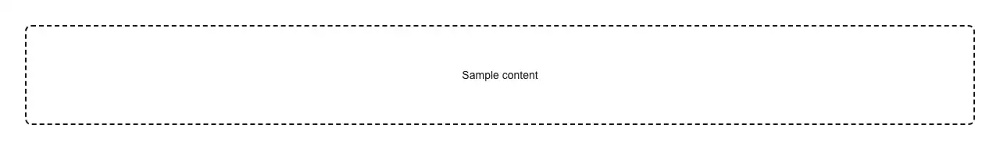

A drag-and-drop file upload area that is also a real file picker: drop files onto it, or click it — or focus it and press Enter or Space — to open the native chooser. Reach for it at the point a product takes a file in: an avatar or profile photo upload, a logo in brand settings, an image or gallery upload, a CSV/TSV/XLSX import step, a document, PDF, contract or resume upload, receipts and invoices, ID and KYC documents, attachments on a ticket, issue, message or email composer, a bulk media or photo drop, a dataset or training-corpus upload for an AI app, a .zip or backup restore, and the file step of an onboarding or import wizard. Common asks it answers: "file dropzone", "drag and drop file upload", "drop zone react", "drag drop upload area", "upload box", "click to browse files", "file picker component", "shadcn file input", "shadcn file upload", "shadcn dropzone", "react-dropzone alternative", "filepond alternative", "uppy alternative", "csv upload component", "image upload dropzone", "multiple file upload react", "accept only images", "limit file size on upload", "restrict file types react". The gap in official shadcn/ui is the taking-in half, and it is worth being precise about it now that the catalogue has grown: input covers text-like types and never file, and attachment — its newer component in this area — renders a file that has already been attached, with media, title, description and actions, but contains no `<input type="file">`, no drop target, and no accept or size filtering. Nothing there receives a file. What is hand-rolled every time and easy to get wrong: a drop target only works if `dragover` is cancelled, and a version that skips it drops the file straight into the browser, which navigates away from the app and takes any unsaved form with it — so `dragover` is cancelled here. The `accept` attribute is also filtering theatre on a drop: the browser applies it to the chooser dialog only, and anything dragged in arrives unfiltered, so the same rules are applied a second time in JavaScript. Dropped and picked files therefore go through one path and one filter — `accept` (a mime type, a wildcard like image/*, or a .ext), `maxSize` in bytes, and `maxFiles` — and everything skipped comes back through `onReject` tagged with the reason it was skipped ("type", "size" or "too-many"), so the UI can say why instead of swallowing the file and looking broken. It wraps a hidden real `<input type="file">` rather than simulating one, so the control still submits with a form, still takes `name` and `required`, and still forwards a ref for a caller who wants to open the chooser from a button elsewhere. Works controlled or uncontrolled over a `File[]`, single or multiple, with a highlighted drag-over state and a disabled state that also leaves the tab order. Accessible without a mouse or a screen: the region is a `role="button"` with a real tab stop, activated by Enter and Space, drawn with a focus-visible ring, marked `aria-disabled` when disabled, and every add and every rejection is announced through a polite live region — the part hand-rolled dropzones almost always omit, which leaves a screen-reader user with no confirmation that a dropped file landed or any idea why it did not. It hands back a `File[]` and deliberately stops there — no endpoint, no auth, no progress source it would have to guess. Pair it with upload-list for the rows that show what happened to those files. Styled with shadcn tokens so it follows light and dark mode; the only dependency is lucide-react, for the upload icon.

Rendered on the shadcn default neutral palette with harness-generated props.
pnpm dlx shadcn@4.21.0 add @pulld/file-dropzone
| licence | POINTER |
|---|---|
| primitive base | none |
| type | registry:ui |
| files | src/components/ui/file-dropzone.tsx |
| npm deps pulled | none beyond the pre-installed peer set |
| registry deps | — |
| semantic / palette / hex | 7 / 0 / 0 |
| writes shared ui/ | yes — can overwrite the project’s own primitives |